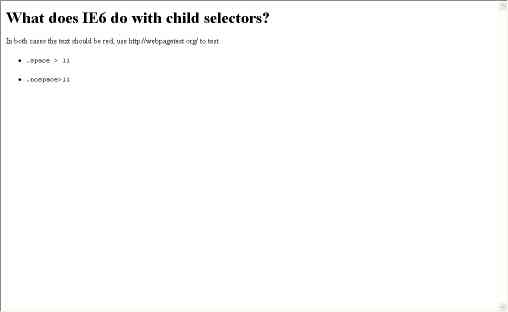

In both cases the text should be red, use http://webpagetest.org/ to test.
.space > li
.nospace>li
IE6 ignores the rule completly. I couldn't remember if it ignored the rule or ignored the child combinator & treated it as a decendent selector.
